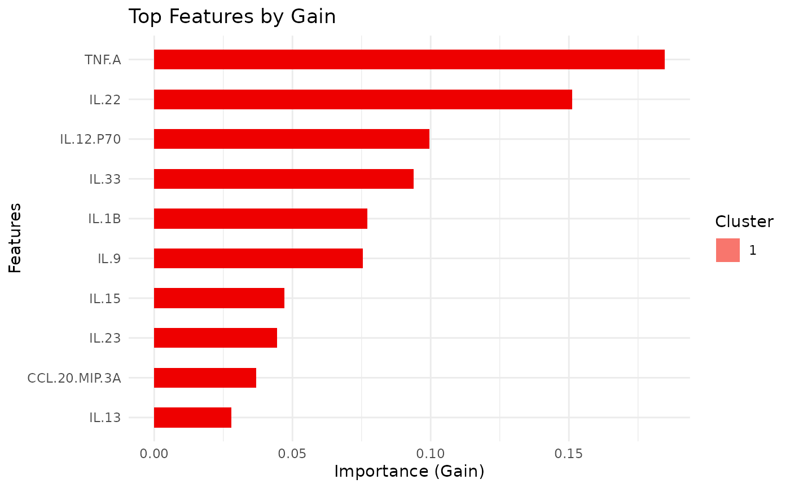
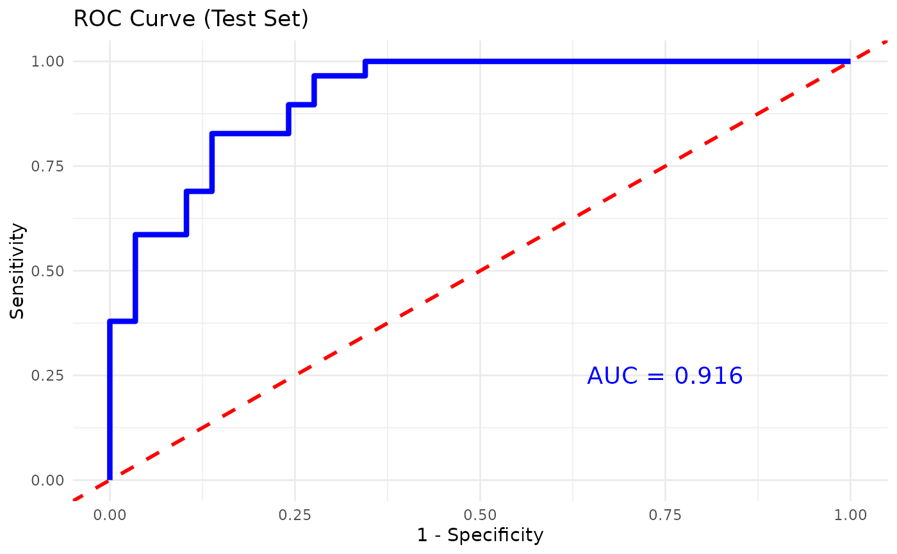

This function trains and evaluates an XGBoost classification model on cytokine data. It allows for hyperparameter tuning, cross-validation, and visualizes feature importance.
Usage
cyt_xgb(
data,
group_col,
train_fraction = 0.7,
nrounds = 500,
max_depth = 6,
eta = 0.1,
nfold = 5,
cv = FALSE,
objective = "multi:softprob",
early_stopping_rounds = NULL,
eval_metric = "mlogloss",
gamma = 0,
colsample_bytree = 1,
subsample = 1,
min_child_weight = 1,
top_n_features = 10,
plot_roc = FALSE,
output_file = NULL,
progress = NULL
)Arguments
- data
A data frame containing the cytokine data, with one column as the grouping variable and the rest as numerical features.
- group_col
A string representing the name of the column with the grouping variable (i.e., the target variable for classification).
- train_fraction
A numeric value between 0 and 1 representing the proportion of data to use for training (default is 0.7).
- nrounds
An integer specifying the number of boosting rounds (default is 500).
- max_depth
An integer specifying the maximum depth of the trees (default is 6).
- eta
A numeric value representing the learning rate (default is 0.1).
- nfold
An integer specifying the number of folds for cross-validation (default is 5).
- cv
A logical value indicating whether to perform cross-validation (default is FALSE).
- objective
A string specifying the XGBoost objective function (default is "multi:softprob" for multi-class classification).
- early_stopping_rounds
An integer specifying the number of rounds with no improvement to stop training early (default is NULL).
- eval_metric
A string specifying the evaluation metric (default is "mlogloss").
- gamma
A numeric value for the minimum loss reduction required to make a further partition (default is 0).
- colsample_bytree
A numeric value specifying the subsample ratio of columns when constructing each tree (default is 1).
- subsample
A numeric value specifying the subsample ratio of the training instances (default is 1).
- min_child_weight
A numeric value specifying the minimum sum of instance weight needed in a child (default is 1).
- top_n_features
An integer specifying the number of top features to display in the importance plot (default is 10).
- plot_roc
A logical value indicating whether to plot the ROC curve and calculate the AUC for binary classification (default is FALSE).
- output_file
Optional. A file path to save the outputs as a PDF file. If provided, outputs are written to the file and results are returned invisibly.
Value
A list containing:
- summary_text
A character string summarizing key results (interactive mode only).
- model
The trained XGBoost model.
- confusion_matrix
The confusion matrix (test set).
- importance
The feature importance data for the top features.
- class_mapping
A named vector showing the mapping from class labels to numeric values used for training.
- cv_results
Cross-validation results if performed (otherwise NULL).
- plot
A ggplot object showing the feature importance plot.
Examples
# Example usage:
data_df0 <- ExampleData1
data_df <- data.frame(data_df0[, 1:3], log2(data_df0[, -c(1:3)]))
data_df <- data_df[, -c(2,3)]
data_df <- dplyr::filter(data_df, Group != "ND")
cyt_xgb(
data = data_df, group_col = "Group",
nrounds = 500, max_depth = 4, eta = 0.05,
nfold = 5, cv = FALSE, eval_metric = "mlogloss",
early_stopping_rounds = NULL, top_n_features = 10,
plot_roc = TRUE
)
#> Warning: Parameter 'watchlist' has been renamed to 'evals'. This warning will become an error in a future version.
#> Setting levels: control = 0, case = 1
#> Setting direction: controls < cases
#> $summary_text
#> [1] "### XGBOOST RESULTS ###\n\n1) Group -> Numeric Label Mapping:\nPreT2D T2D \n 0 1 \n\n2) Best Iteration from Training (based on mlogloss ):\nNULL\n\n3) Confusion Matrix on Test Set:\n Reference\nPrediction 0 1\n 0 14 15\n 1 15 14\n\nTest Accuracy: 0.483 \n\nSensitivity: 0.4827586 \nSpecificity: 0.4827586 \n\nAUC: 0.492 \n\n4) Top 10 Important Features:\n Feature Gain Cover Frequency\n <char> <num> <num> <num>\n 1: TNF.A 0.18457678 0.10535233 0.09103448\n 2: IL.22 0.15117263 0.16064281 0.09885057\n 3: IL.12.P70 0.09955532 0.12855158 0.12321839\n 4: IL.33 0.09384522 0.08514973 0.07908046\n 5: IL.1B 0.07717208 0.03835908 0.05149425\n 6: IL.9 0.07554566 0.06955229 0.07080460\n 7: IL.15 0.04705740 0.05853239 0.03310345\n 8: IL.23 0.04440949 0.02533791 0.02988506\n 9: CCL.20.MIP.3A 0.03678675 0.05623800 0.05287356\n10: IL.13 0.02785650 0.02633047 0.03678161"
#>
#> $model
#> ##### xgb.Booster
#> call:
#> xgboost::xgb.train(params = params, data = dtrain, nrounds = nrounds,
#> verbose = FALSE, early_stopping_rounds = early_stopping_rounds,
#> watchlist = list(train = dtrain, test = dtest))
#> # of features: 25
#> # of rounds: 500
#> callbacks:
#> evaluation_log
#> evaluation_log:
#> iter train_mlogloss test_mlogloss
#> <int> <num> <num>
#> 1 0.66160263 0.6754284
#> 2 0.63290945 0.6599301
#> --- --- ---
#> 499 0.01423204 0.4264843
#> 500 0.01421502 0.4263731
#>
#> $confusion_matrix
#> Reference
#> Prediction 0 1
#> 0 14 15
#> 1 15 14
#>
#> $importance
#> Feature Gain Cover Frequency
#> <char> <num> <num> <num>
#> 1: TNF.A 0.18457678 0.10535233 0.09103448
#> 2: IL.22 0.15117263 0.16064281 0.09885057
#> 3: IL.12.P70 0.09955532 0.12855158 0.12321839
#> 4: IL.33 0.09384522 0.08514973 0.07908046
#> 5: IL.1B 0.07717208 0.03835908 0.05149425
#> 6: IL.9 0.07554566 0.06955229 0.07080460
#> 7: IL.15 0.04705740 0.05853239 0.03310345
#> 8: IL.23 0.04440949 0.02533791 0.02988506
#> 9: CCL.20.MIP.3A 0.03678675 0.05623800 0.05287356
#> 10: IL.13 0.02785650 0.02633047 0.03678161
#>
#> $class_mapping
#> PreT2D T2D
#> 0 1
#>
#> $cv_results
#> NULL
#>
#> $plot

#>
#> $roc_plot

#>